WEEK 2 — Maintenance, Presentation 1, Backend Refactor & Inventory
UAUT — College of ICT × TTCL · BSc ICT Practical Training · 24 Aug → 2 Oct 2026
Mon 31/08 → Fri 04/09/2026 · David Erick Mwijage (Mzee Mwijay) · Reg 250/13055
Diagram 1 — System Architecture

How the pieces connect: entry points, hardened request pipeline, data layer and GIS layer.
Diagram 2 — Database Relationships (ERD)

Tables and foreign keys in play this week — drawn from database/schema.sql.
Diagram 3 — AI-Assisted Fallback Chain

Escalation chain used to complete the week's task: smartest tool first, offline fallback last, nothing unverified ships.